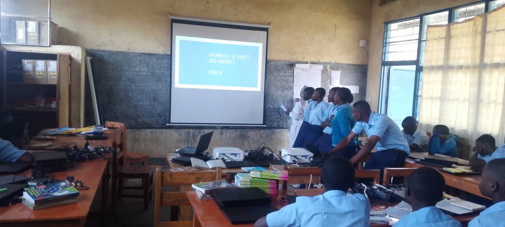

Ikoranabuhanga mu Burezi rya None
Ikoranabuhanga rikomeje guhindura uburyo bw’imyigishirize no kwigira mu mashuri yo muri iki gihe. Rituma abanyeshuri babona amasomo ku buryo bworoshye, bwihuse kandi bufatika, bigafasha mu kongera umusaruro w’uburezi.
Uburyo bushya bushingiye ku ikoranabuhanga burimo gukoresha porogaramu za mudasobwa, amashuri yo kuri murandasi (e-learning), ndetse n’imfashanyigisho z’amashusho n’amajwi, bigenda byegereza abanyeshuri amasomo mu buryo buborohera kuyasobanukirwa no kuyakurikirana.
Ikoranabuhanga kandi rifasha abarimu kugenzura no gukurikirana imyigire y’abanyeshuri mu buryo bwihuse binyuze mu gutanga imikoro, gukosora, no gutanga amanota hakoreshejwe uburyo bwa murandasi. Ibi bituma umwarimu agira igihe gihagije cyo kwita ku kumvikanisha neza amasomo.
N’ubwo bimeze bityo, haracyari imbogamizi zirimo ubumenyi buke mu gukoresha ikoranabuhanga, ibikoresho bidahagije n’ukuntu internet itaragera kuri bose. Gusa, hakomeje gushyirwa imbaraga mu kongera amahugurwa y’abarimu, gushora imari mu bikoresho no kongera uburyo bw’itumanaho kugira ngo ikoranabuhanga rirusheho gufasha uburezi bw’u Rwanda.
Ikoranabuhanga mu burezi rirateganya gufasha u Rwanda kubaka ireme ry’uburezi rigezweho, rifasha abana gukura bafite ubumenyi bujyanye n’igihe, kandi bitanga icyizere cy’uko hazabaho impinduka nziza mu myigire y’ejo hazaza.
← Subira ku rutonde rw’amakuru